- 1 Introducción
- 2 Datos
- 3 Manejo de datos con R
- 4 Uniones de tablas con R
- 5 Representación gráfica básica con ggplot
- 6 Descripción numérica de variables
- 7 Descripción gráfica de datos
- 8 Problemas con los datos
- 9 Análisis Exploratorio de Datos. EDA
Capítulo 7 Descripción gráfica de datos
Los estadísticos son insuficientes para conocer una variable, la siguiente figura es muy conocida y presenta unas series de pares de datos X e Y con los mismos estadísticos que son completamente diferentes.

Importancia de la visualización de datos
Disponer los estadísticos es insuficiente para conocer como son los valores que toma una variable, como se distribuye. Se torna necesario describir mejor ese comportamiento mediante análisis gráficos. En capítulos anteriores se trabajó con las posibilidades que ofrece ggplot para visualizar datos. A continuación se desarrollan esas posibilidades y se estudia como describen nuestros datos esos gráficos.
El primer paso es cargar los datos de trabajo, ya conocidos, y se da comienzo con el trabajo.
library(tidyverse)
train <- read.csv("./data/train.csv")7.0.1 Descripción gráfica de factores
Si numéricamente tenemos frecuencias absolutas o frecuencias relativas los gráficos más sencillos para describir estas variables son los gráficos de barras y gráficos de sectores.
resumen <- train %>% group_by(Gender) %>% summarise(clientes = n())
ggplot(resumen, aes(x='', y = clientes, fill=Gender)) + geom_bar(stat="identity", width=1) +
coord_polar("y", start=0)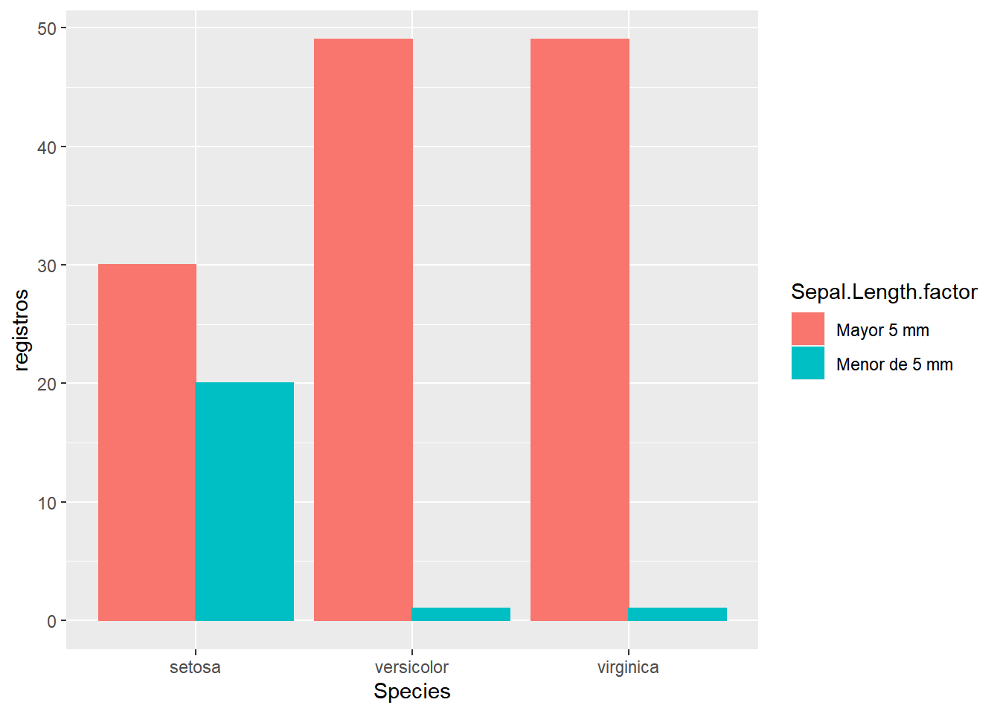
Con datos absolutos el gráfico de sectores pierde sentido, aunque es posible conocer como se distribuye la variable en la población es necesaria la “relativización”, la obtención de porcentajes.
resumen <- train %>% group_by(Gender) %>% summarise(porcen_clientes = n()/nrow(train))
ggplot(resumen, aes(x='', y = porcen_clientes, fill=Gender)) + geom_bar(stat="identity", width=1) +
coord_polar("y", start=0)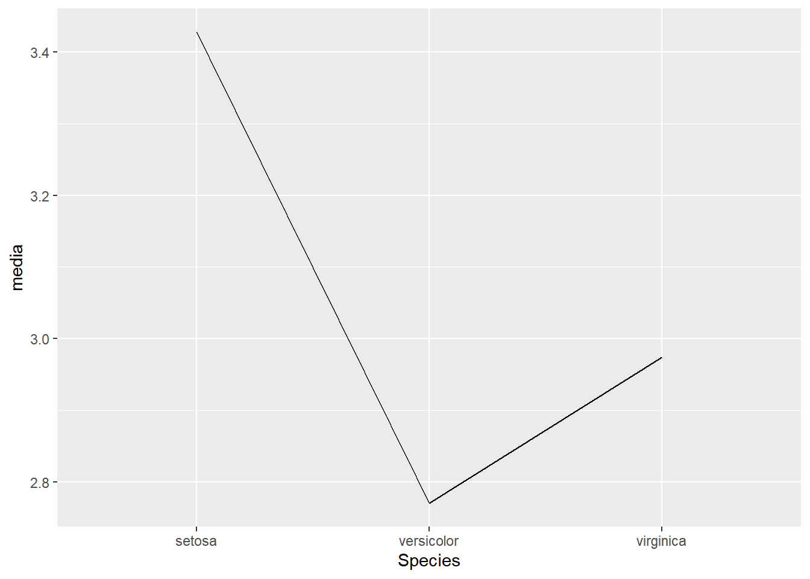
En el caso concreto de los gráficos de sectores puede ser más sencillo emplear los gráficos propios del módulo base, el corazón de R. En ese caso, se dispone de la función pie
resumen <- train %>% group_by(Gender) %>% summarise(porcen_clientes = n()/nrow(train))
pie(resumen$porcen_clientes, labels=paste0(resumen$Gender, ': ', round(resumen$porcen_clientes*100,1),'%'),
main="Gráfico sectores por sexo")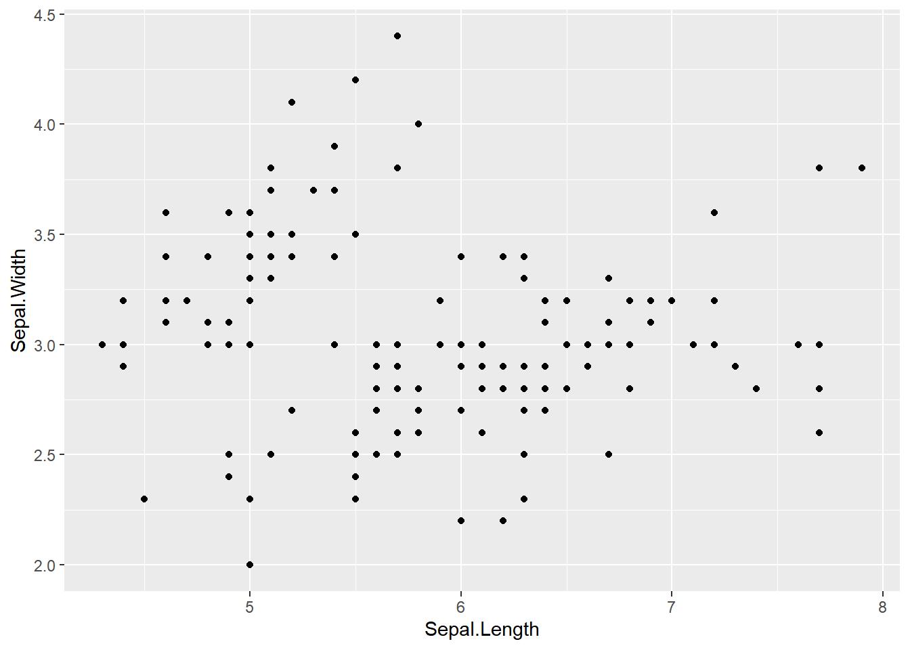
El código y el gráfico (aparentemente) es más sencillo de entender. Este tipo de representación está limitada cuando el factor a analizar tiene un gran número de niveles como sucede con la variable Region_Code.
resumen <- train %>% group_by(Region_Code) %>% summarise(porcen_clientes = n()/nrow(train))
pie(resumen$porcen_clientes, labels=paste0(resumen$Region_Code, ': ', round(resumen$porcen_clientes*100,1),'%'),
main = "Gráfico sectores por Región")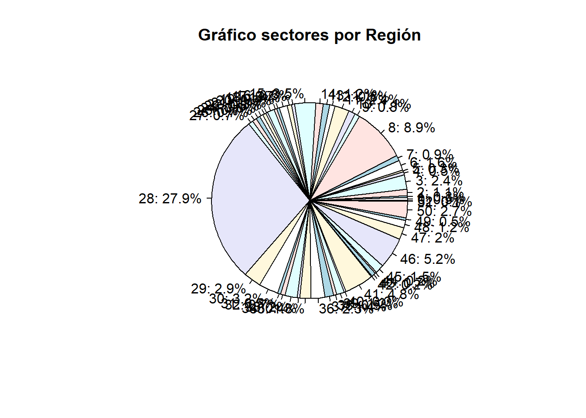
La variable Region_Code tiene 0 posibles valores. Una puntualización, aunque en los datos de partida tiene un formato numérico estamos ante un factor, este ejemplo ilustra la importancia de conocer los datos que se están empleando. El conocimiento de las fuentes de información ha de ser previo al análisis descriptivo, o bien, este análisis nos puede servir para identificar estas incoherencias. Recuperando la defición de los datos anteriormente planteada.
- Region_Code Unique code for the region of the customer
Código único no expresa un valor numérico, expresa una codificación. Puede parecer un caso sencillo pero es importante tener en cuenta estas situaciones cuando se trabajan con un gran volumen de variables. Para factores como este, con un gran número de niveles, puede ser más apropiado el uso de gráficos de barras.
train %>% group_by(Region_Code) %>% summarise(porcen_clientes = n()/nrow(train)) %>%
ggplot(aes(x=Region_Code, y=porcen_clientes)) + geom_bar(stat="identity")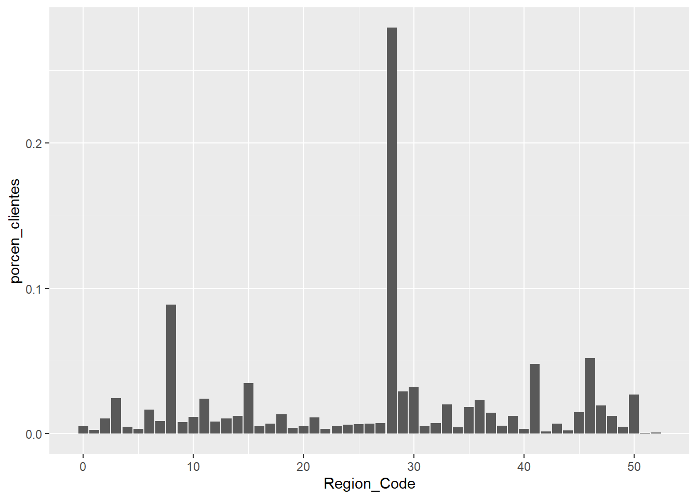
En este código no se genera el habitual data frame intermedio, directamente podemos aplicar ggplot sobre la sumarización, es otro modo de trabajar si no se quiere disponer de la sumarización. Se observa que el eje X interpreta la variable Region_Code como numérica, establece rangos númericos, no aparece cada valor. se recomienda empezar a describirla como un factor. Esta es una situación habitual que se da en los datos importados, hay valores cualitativos que se almacenan en vriables cuantitativas y viceversa. Se trata de un problema habitual que se encuentra el científico de datos.
train %>% group_by(Region_Code = as.factor(Region_Code)) %>%
summarise(`Porcentaje de clientes` = round(n()*100/nrow(train),2)) %>%
ggplot(aes(x=Region_Code, y = `Porcentaje de clientes`)) + geom_bar(stat="identity") +
ggtitle("Porcentaje de clientes por región")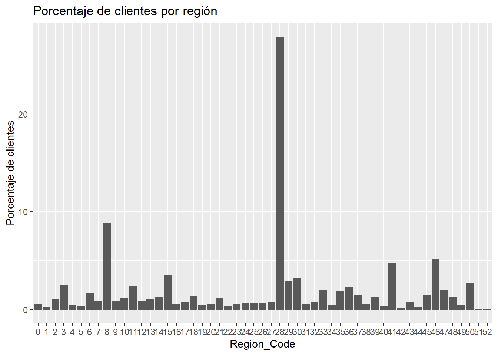
En esta nueva propuesta el eje x es distinto, ya no hay intervalos, cada región tiene su correspondiente código, si la variable es numérica se disponen intervalos. En cualquier caso, se aprecia como se complica la lectura de esos datos porque el factor Region_code tiene un gran número de niveles.
Es importante destacar la importancia descriptiva de los gráficos de barras ya que nos permiten conocer la composición de los datos en función de los niveles de un factor. Además, se está repitiendo el mismo código en cada uno de los gráficos propuestos. Cuando estamos en estas situaciones es útil crear funciones.
#Función para describir factores
describe_factor <- function(df, fct){
df %>% group_by(factor_analisis = as.factor(!!as.name(fct))) %>%
summarise(`Porcentaje de clientes` = n()/nrow(train)) %>%
ggplot(aes(x=factor_analisis, y = `Porcentaje de clientes`)) + geom_bar(stat="identity") +
ggtitle(paste0("Porcentaje de clientes por ",fct))
}
describe_factor(train, 'Gender')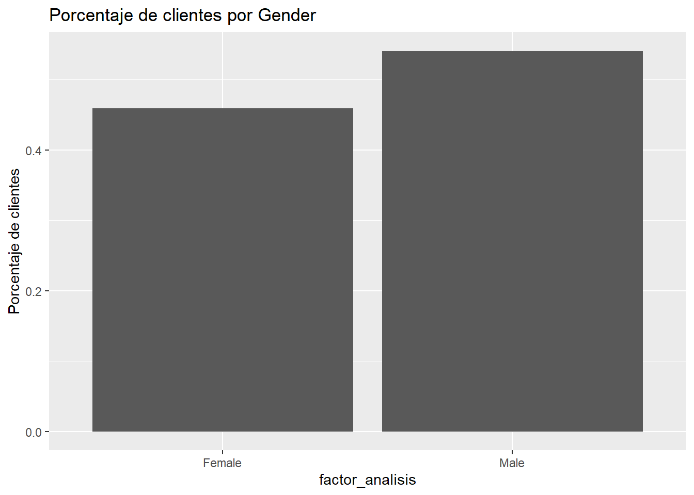
describe_factor(train, 'Vehicle_Age')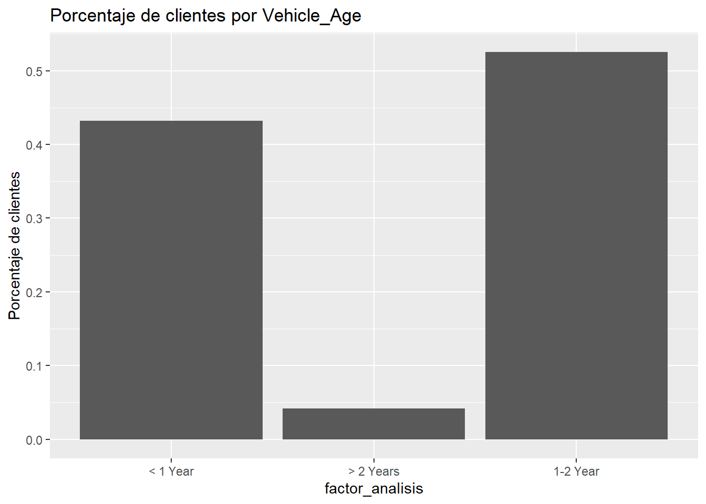
describe_factor(train, 'Vehicle_Damage')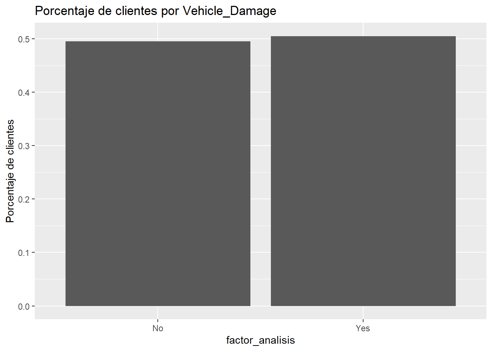
El código que describe el factor es repetitivo, para simplificar la programación en R se emplea una función, no es el objeto de esta formación aprender a realizar funciones con R pero se van a ilustrar algunos ejemplos de uso. Además, cuando se usa dplyr facilita el uso de funciones trabajar con “símbolos” que es una forma de referir valores de un objeto de R, en este caso los nombres y por ello se emplea as.name() con el único paramétro fct que recibe la función. En este caso la función describe_factor crea una sumarización previa por el factor que describe el parámetro de la función fct y posteriormente se genera el gráfico de barras más sencillo posible con ggplot, sólo se parametriza el título del gráfico uniendo un texto con el nombre de la variable. Esta función puede describir también variables cuantitativas.
describe_factor(train, 'Age')Se recuerda que una variable cuantitativa puede tener un número finito de elementos lo que da pie a ser tratada como un factor, paradigma de esta situación es la variable edad en prácticamente todos los conjuntos de datos.
7.0.2 Descripción gráfica de variables numéricas
Vistos con anterioridad los estadísticos de posición, variación y forma para las variables cuantitativas es imprescindible la descripción gráfica, en el capítulo introductorio a ggplot se pusieron sobre el papel diversos análisis gráficos que servirán para realizar esta descripción. Se parte con los gráficos más sencillos, realizados con el código más sencillo de ggplot y paulatinamente se irá sofisticando ese código a lo largo del curso.
Se comienza con los histogramas y los gráficos de densidad.
# Histogramas
ggplot(data = train, aes(x = Age)) + geom_histogram()## `stat_bin()` using `bins = 30`. Pick better value with `binwidth`.
# Gráficos de densidades
ggplot(data = train, aes(x = Age)) + geom_density()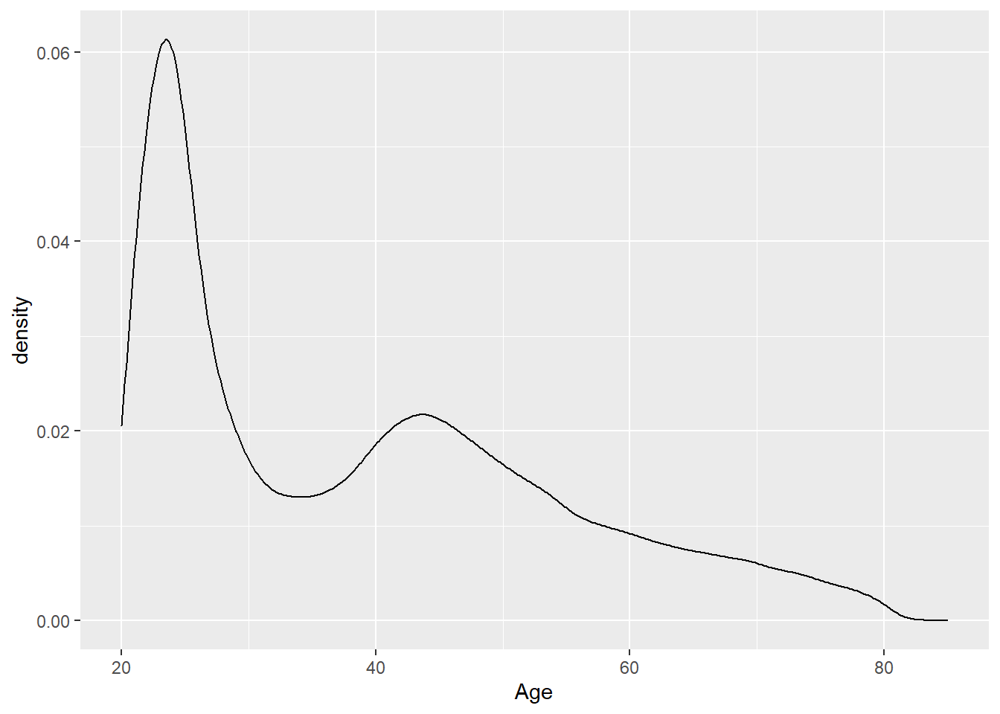
# Ambos
ggplot(data= train,aes(x= Age))+
geom_histogram(binwidth = 5)+
geom_density(aes(y=5 * ..count..), color='Blue')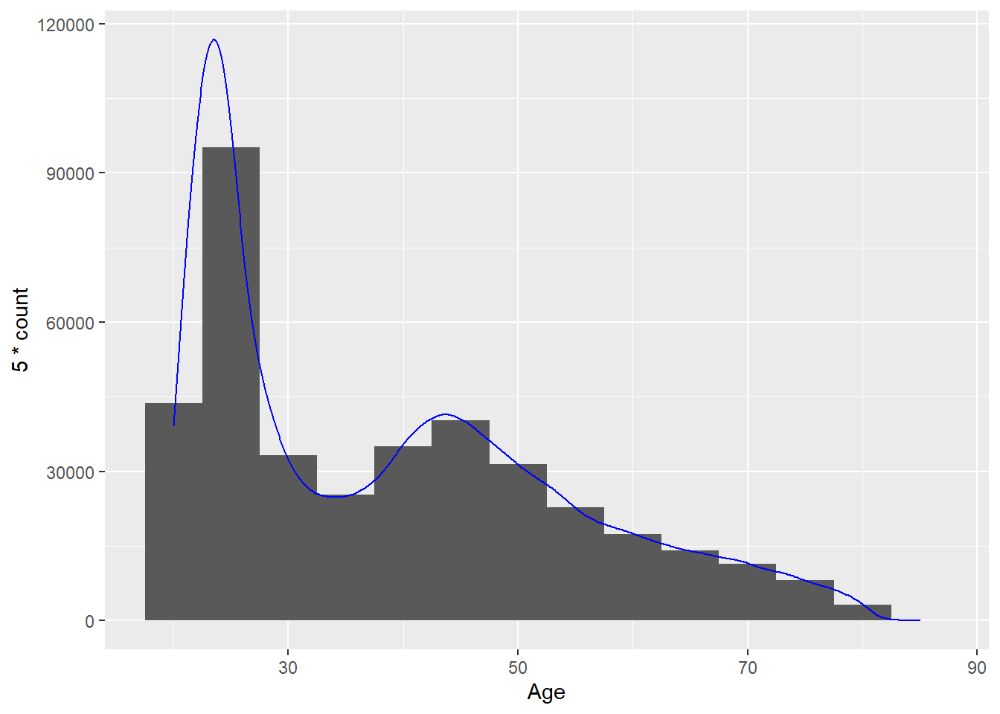
Tanto histograma como gráfico de densidad representan todos los posibles valores que puede tomar la variable cuantitativa. Nunca se representará un valor que no aparece y nunca se dejará de representar algún valor existente. En el caso del gráfico de densidad la línea continua deja una superficie por debajo de la curva de tamaño 1, es decir, el 100% de las observaciones están en algún punto por debajo de esa curva y de izquierda a derecha se pueden ir acumulando porcentaje de observaciones, se puede ir acumulando densidad.
Volviendo con los principales estadísticos descriptivos se puede buscar como aparecen reflejados en el histograma.
library(e1071)
# Para la moda se crea una función
Mode <- function(x) {
fx <- unique(x)
fx[which.max(tabulate(match(x, fx)))]}
knitr::kable(train %>% summarise(`Media edad` = mean(Age),
`Mediana edad` = median(Age),
`Moda de edad` = Mode(Age),
`Desviación de edad` = sd(Age)))| Media edad | Mediana edad | Moda de edad | Desviación de edad |
|---|---|---|---|
| 38.82258 | 36 | 24 | 15.51161 |
ggplot(data = train, aes(x = Age)) + geom_histogram()## `stat_bin()` using `bins = 30`. Pick better value with `binwidth`.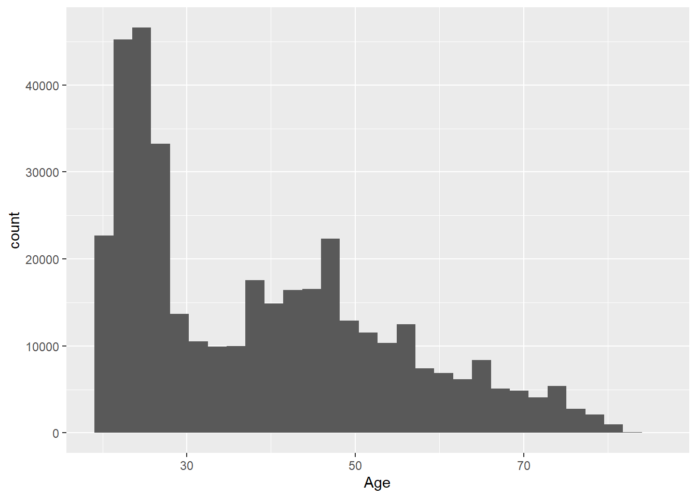
La moda se sitúa en la barra más alta, es el valor que más se repite, la forma de la variable parece que tiene a su vez como dos formas distintas, la encuesta se ha realizado a clientes jóvenes y a clientes en el rango entre 40 y 50 años, como mucho se ha preguntado a clientes de 90 años y en ningún caso a clientes menores de edad. En este caso los estadísticos descriptivos poco o nada podían aportar. En cuanto al código empleado hay particularidades en el gráfico que une histograma y densidad. Al ser dos valores en distinta escala es necesario realizar un ajuste para que ambos gráficos se puedan ver en uno y por eso se modifican los valores del gráfico de densidades mediante ..count.. ggplot tiene un código propio que puede hacer labores básicas, es importante saber que disponemos de esa herramienta.
Podemos representar algunas de esas medidas en el gráfico.
media_c = mean(train$Age)
ggplot(data = train, aes(x = Age)) + geom_histogram() +
geom_vline(xintercept = media_c, color='blue') +
geom_text(aes(media_c, 20000,
label=paste("Media = ", round(media_c,1))), size=5, color='blue',
data = data.frame())## `stat_bin()` using `bins = 30`. Pick better value with `binwidth`.Con geom_vline añadimos una barra vertical y con geom_text añadimos texto a nuestro gráfico de ggplot. En cuanto a la asimetría teníamos un 0.67 un valor muy positivo indica asimetría a la izquierda, algo muy evidente viendo como se distribuye la variable a lo largo del gráfico de densidad. La kurtosis poco o nada puede aportar con una forma tan peculiar del gráfico de densidad donde parece que hay dos formas diferenciadas dentro de los datos.
A continuación, se analiza la variable Annual_premium con un comportamiento sustancialmente distinto.
knitr::kable(train %>% summarise(`Media prima` = mean(Annual_Premium),
`Mediana prima` = median(Annual_Premium),
`Moda de prima` = Mode(Annual_Premium),
`Desviación de prima` = sd(Annual_Premium)))| Media prima | Mediana prima | Moda de prima | Desviación de prima |
|---|---|---|---|
| 30564.39 | 31669 | 2630 | 17213.16 |
ggplot(data= train,aes(x = Annual_Premium))+
geom_histogram(bins = 100) +
geom_density(aes(y= 10000 * ..count..), color='Blue')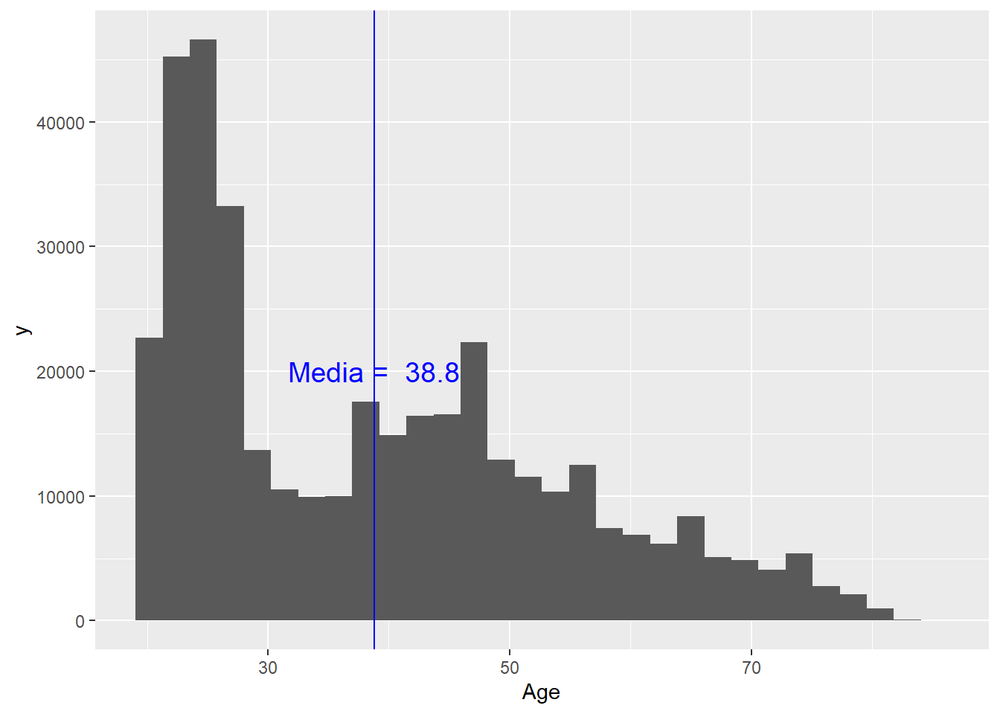
ggtitle('Distribución de la variable prima anual')## $title
## [1] "Distribución de la variable prima anual"
##
## attr(,"class")
## [1] "labels"Cuando se trabajen con variables como importes se puede complicar el histograma y el gráfico de densidades es recomendable jugar con el número de grupos, anchura de los mismos, eliminar densidades, etc. En este caso concreto se aprecia que la forma, la distribución de los valores de la variable tiene un punto alto en el 0, un valor modal en el 0, no se deberían tener clientes sin prima si se trabaja con una base de clientes de un ramo de salud. Posteriormente tiene una forma muy asimétrica hacia la izquierda debido a que hay valores de prima muy altos. Esos valores 0 hacen que la media sea más baja que la mediana, la desviación típica es muy alta. Como se vio con anterioridad estábamos con valores muy altos de asimetría, la distribución es asimétrica por la izquierda y con valores muy altos de curtosis, hay un apuntamiento muy alto, muy alto a la izquierda. Este tipo de forma, este tipo de distribución es muy típica de importes, ninguno es menor que 0 y hay importes muy altos.
Además de los histogramas y los gráficos de densidad en la descripción de las posibilidades gráficas se dio importancia a los boxplot, estos gráficos contienen mucha y muy valiosa información sobre como es una variable cuantitativa.
ggplot(train , aes(y = Age)) + geom_boxplot() + coord_flip()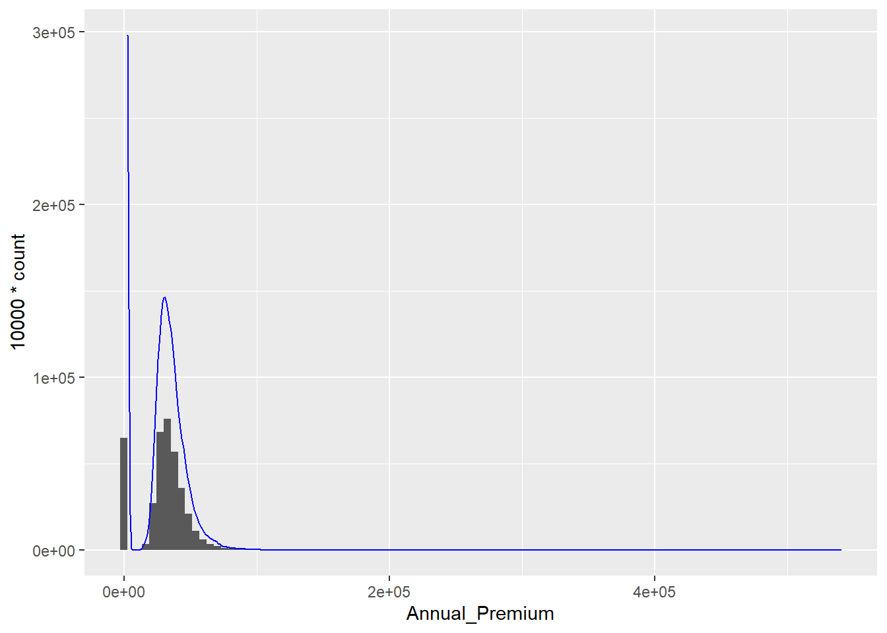
Mediante coord_flip() se ha rotado la figura generada con ggplot. Esta representación gráfica está muy ligada a los estadísticos de posición y a algunos estadísticos de dispersión.
summary(train$Age)## Min. 1st Qu. Median Mean 3rd Qu. Max.
## 20.00 25.00 36.00 38.82 49.00 85.00p <- ggplot(train , aes(y = Age)) + geom_boxplot() + coord_flip()
p +
annotate(geom="text", x=-0.4, y=summary(train$Age)[1], label=summary(train$Age)[1],color="red") +
annotate(geom="text", x=-0.4, y=summary(train$Age)[2], label=summary(train$Age)[2],color="red") +
annotate(geom="text", x=-0.4, y=summary(train$Age)[3], label=summary(train$Age)[3],color="red") +
annotate(geom="text", x=-0.4, y=summary(train$Age)[5], label=summary(train$Age)[5],color="red") +
annotate(geom="text", x=-0.4, y=summary(train$Age)[6], label=summary(train$Age)[6],color="red") 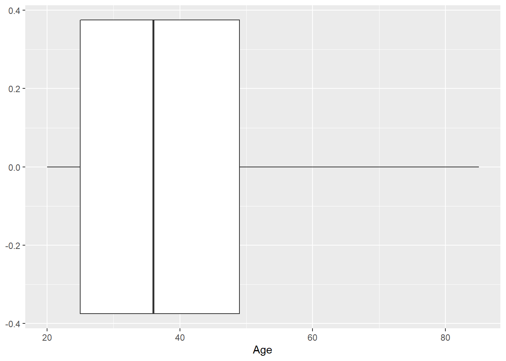
En este ejemplo ggplot no genera directamente el gráfico, genera un objeto lista con los elementos del gráfico, a esos elementos les ponemos un texto en este caso con la función annotate que se corresponde con los percentiles que nos arroja la función summaryde R por lo que el gráfico de cajas, el boxplot describe gráficamente donde están el 50% de las observaciones entre que valores está comprendida la variable y donde se sitúa la mediana.
Además, también toma mucha relevancia obtener gráficos de cajas “que dicen menos”.
summary(train$Annual_Premium)## Min. 1st Qu. Median Mean 3rd Qu. Max.
## 2630 24405 31669 30564 39400 540165ggplot(train , aes(y = Annual_Premium)) + geom_boxplot() + coord_flip()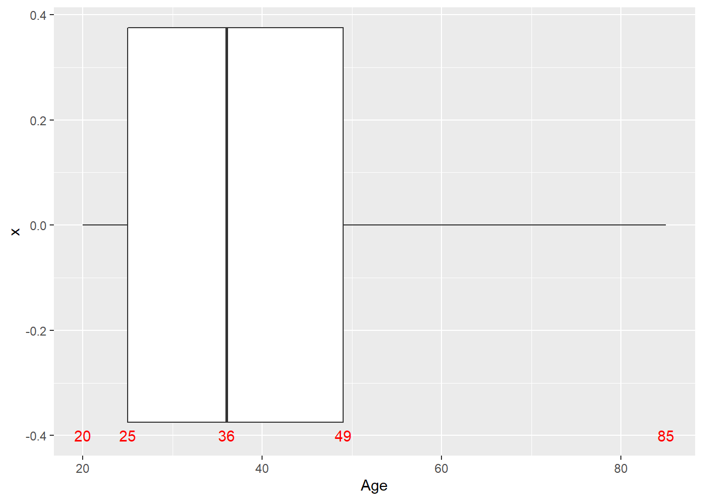
Ya se vio con el gráfico de densidad que la prima anual toma unos valores más complejos. En este caso de la caja parece muy estrecha y aparecen una serie de puntos por la derecha que dificultan la descripción de los datos. Cuando aparecen esos puntos en estos gráficos los posibles valores que toma la variable tienen algún valor atípico, la distribución de la variable tiene outliers. Es uno de los posibles problemas que pueden plantear los datos numéricos y que se desarrollarán en capítulos posteriores.